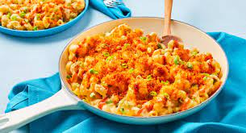

Firehouse Mac

Bringing the heat with this rich hearty bowl of mac 'n' cheese!
Each bowl of gooey-crispy-cheesy goodness is an absoulute treat with a spicy pepper jack sauce and a buffalo-seasoned panko topping!
Ingredients
- Scallions
- Long Green Pepper
- Garlic
- Panko Breadcrumbs
- Frank's Seasoning Blend
- Cavatappi Pasta
- Reduced-Fat Milk
- Shredded Cheddar
- Shredded Pepper Jack
- Hot Sauce
Steps
- Heat broiler to high. Bring a large pot of salted water to a boil. Wash and dry all produce. Halve, core, and finely dice green pepper. Trim and thinly slice scallions, separating whites from greens. Peel and finely chop garlic. Place 1 TBSP butter (2 TBSP for 4 servings) in a small microwave-safe bowl; microwave until melted, 30 seconds. Stir in panko and Frank’s Seasoning. Set aside
- Heat a drizzle of oil in a medium, preferably ovenproof, pan (use a large pan for 4 servings) over medium-high heat. Add green pepper; cook, stirring occasionally, until browned and tender, 4-5 minutes. Add scallion whites and garlic; cook, stirring occasionally, until softened and fragrant, 1 minute. Season with salt and pepper. Turn off heat; transfer veggies to a plate.
- Once water is boiling, add pasta to pot. Cook until al dente, 9-12 minutes. Reserve ½ cup pasta cooking water, then drain.
- Melt 1 TBSP butter (2 TBSP for 4 servings) in pan used for veggies over medium heat. Whisk in 1 TBSP flour (2 TBSP for 4) until lightly browned, 1-2 minutes. Slowly whisk in milk and bring to a simmer. Cook, whisking, until thickened, 2-3 minutes. Season generously with salt and pepper. Reduce heat to low. Whisk in cheddar and pepper jack until melted.
- Stir drained pasta and veggies into pan with cheese sauce. If needed, stir in splashes of reserved pasta cooking water until everything is thoroughly coated in sauce. (If your pan isn’t ovenproof, transfer mixture to a baking dish now.) Sprinkle with seasoned panko. Broil until crust is golden brown, 2-3 minutes. (Watch carefully to avoid burning! The broiler is a powerful tool.)
- Top mac ’n’ cheese with scallion greens. If you like things extra-spicy, drizzle with hot sauce to taste.